while文は、条件が真の間だけ実行を繰り返します。ループを繰り返すたびに、条件を評価し、条件が偽になったところでループを終了します。
基本の書式は次のとおり。
|
while 条件式： |
条件式が真の場合、インデントされたブロックを処理します。if文と同じです。ただ、Ifのときはブロック内の処理を1回だけ実行しますが、whileではブロック内の処理を実行した後、改めて条件式を評価します。そして条件式が真の間は繰り返し処理を実行します。
条件が成立する間、メッセージと変数を出力するプログラムです。
▼if文と同じように、条件式が成立するときの処理内容はインデント（字下げ）したところに記述します。
4行目 sep=":"はprint関数のオプション（separate：区切り文字の指定）です。例題6ではセミコロンで区切って出力しています。
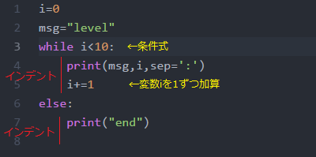
▼実行結果
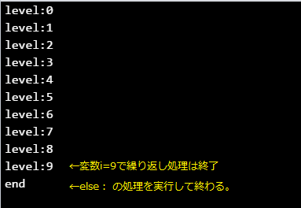
さらにif文を追加してみましょう。
▼変数iの値の大きさによって、変数msg2に代入する文字を「初級」と「上級」に分岐しています。
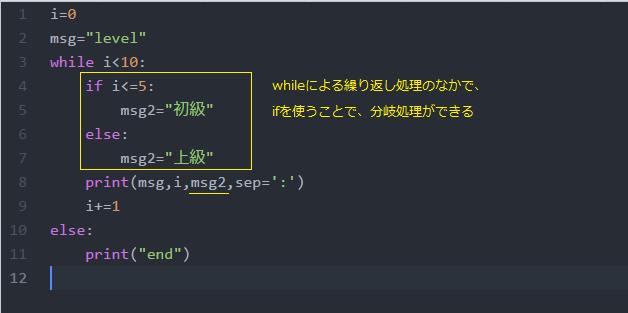
▼実行結果
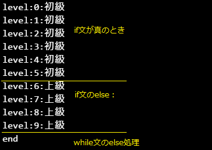
break文で繰り返しループから簡単に抜けることができます。
▼まずは9行目にかいてみましょう。
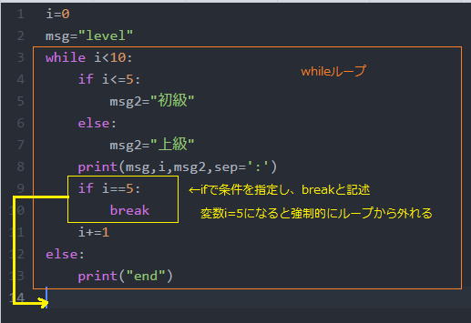
▼実行結果 レベル5が出力されました。12・13行目も無視されます。
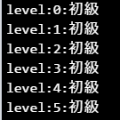
入力されたデータの総和を求めます。もし0（正確には0以下の数値）が入力された時点で、繰り返しを終了し、合計を出力します。
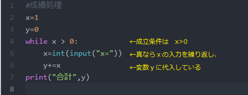
▼実行結果
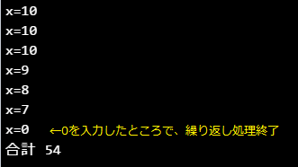
「合計」だけではなく、「（0を除いた）入力数」や「平均値」を出力します。
変数ｙとは別に、ループするたびに回数をカウントする変数が必要です。ファイル名はrei7で上書き保存してください。
▼実行結果の例
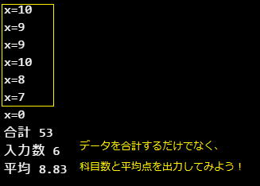
0から9の数字を並べて出力するときは、print関数のオプションend=""で次のように記述できます。
▼end=""で改行せずに出力ができます。
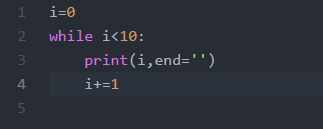
▼実行結果
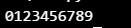
▼つぎのような数字のピラミッドを出力してみましょう（ファイル名はrei8.py）
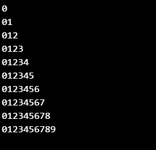
▼ヒント（これ以外の書き方もあります。）
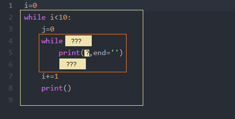